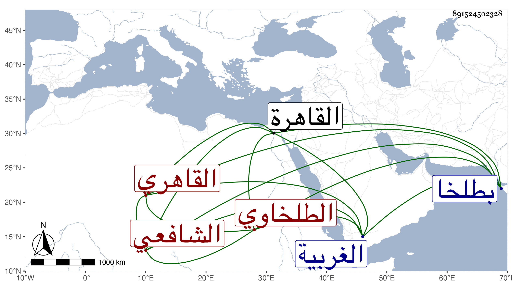

0902Sakhawi.DawLamic.ITO20230111-ara1.EIS1600.891524502328
Biography ID: 891524502328
446
حسن بن علي بن محمد بن عبد الله البدر أبو المجد الطلخاوي ثم القاهري الشافعي . ولد في ليلة الأحد مستهل رمضان سنة سبع وثلاثين وثمانمائة بطلخا من الغربية ، ونشأ بها فقرأ القرآن ومختصر أبي شجاع وتلقن الذكر من يوسف الازهري أحد أصحاب الغمري الكبير ثم تحول مع خاله الحاج علي إلى القاهرة في سنة ثلاث وخمسين فقطنها ، وأقام بالازهر فجود القرآن وحفظ المنهاج وألفية النحو وألفية الفرائض لابن الهائم واللمحة للعفيف في الطب وغالب جمع الجوامع وألفية الحديث والتلخيص وأخذ الفرائض والحساب والميقات والهيئة والهندسة والجبر والمقابلة وحل الشمس بطريق الدر اليتيم عن الشهاب السجيني وربما راجع الشرفي بن الجيعان في شيء من الفرائض والحساب والهيئة مع الوضعيات عن المحب بن العطار والوضعيات فقط عن ابن ولي الدين صهر الغمري والميقات فقط عن نور الدين النقاش وولده والبدر المارداني والحرف عن ناصر الدين بن قرقماس والرمل عن محمد النحريري والفقه عن العبادي والوروري وإمام الكاملية وزكريا والشرف موسى البرمكيني والبرهان العجلوني والفخر المقسي وعبد اللطيف الشارمساحي والزين الابناسي والشمس الجوجري وعن الشرف وكذا ابن قاسم والجمال الكوراني أخذ أصول الدين بل أخذه أيضا عن الكافياجي وعن العجلوني والشرف والكوراني أخذ المنطق وكذا أخذ عن العجلوني وإمام الكاملية وابن المرخم والابناسي أصول الفقه وأخذه أيضا مع المعاني والبيان عن الشهاب بن الأقيطع وعن السنهوري وابن يونس المغربي ونظام الحنفي وكذا الابناسي والكوراني والوروري العربية ، وكذا أخذها مع الصرف عن السهيلي وعن مظفر الامشاطي الطب قرأ عليه شرحه للمحة وغيره وكذا أخذ في الطب عن التقي الشمني وعن كريم الدين الهيثمي الوراقة والشروط ولازم البدر بن القطان في الفقه والتفسير والمعاني والبيان والاصلين والمنطق والابناسي في التفسير والحديث والمعاني والبيان والصرف ، ولازمني في الحديث رواية ودراية بحيث حمل عني شرح ألفية العراقي لناظمها والكثير من شرحي وقرأ علي في شرح العمدة لابن دقيق العيد بل أخذ عني دروسا من شرح ألفية النحو ، وبعض هؤلاء في الأخذ أكثر من بعض وأذن له في الافتاء والتدريس فدرس وناب في القضاء ، وحج وتكسب بالطب قليلا ثم أعرض عن ذلك ولزم التكسب بالشهادة ، وصار مرجع خطته إليه فيها وداوم الجلوس في بعض المساجد لها وللاقراء ولم يتعاط من الاحكام إلا قليلا مع تواضعه وانطراح نفسه واقباله على ما يهمه ، وكتب بخطه أشياء مع ثروة وشدة حرص اقتضى تعبه من قبل بنيه ونحوهم .
